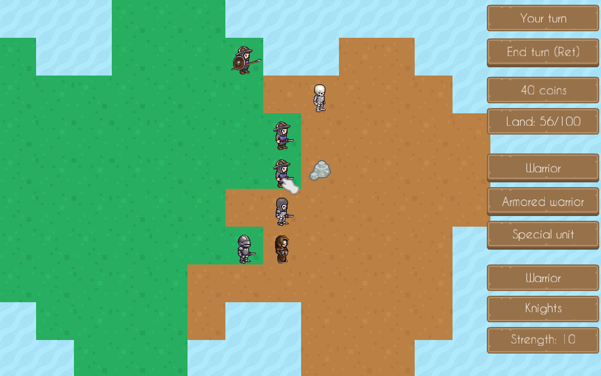

tl;dr
I’ve recently participated in the 42nd edition of Ludum Dare, an online game jam. The theme this time was ‘Running out of space’. I have managed to complete my entry within the limit of 72 hours (Friday 11pm - Monday 11pm).
I really wanted to build a strategy game but having started developing one before (https://github.com/lchsk/knights), I knew I need to heavily limit the features in order to complete it in time.
All things considered, strategy games might be the worst genre choice for game jams as well as for indie developers in general. This is due to the amount of work that needs to be completed to even get to a playable version of a game. For a strategy game problems that need solving include drawing a potentially large map (possibly including hex grids or isometric projection), handling various resources, diverse units, path finding (including movements of whole formations), complex GUIs and AI that needs to keep up with the complexity. And that doesn’t include figuring out how to make all of it fit together well and make it a pleasurable experience for a player.
Clearly, in order to have something finished in 72 hours, a lot has to be dropped or simplified.

A screenshot of the completed game; units of two different sides are visible along with the land they own. A piece of rock in the middle can be collected and exchanged for money that can be used to buy more units.
As the game was intended for a game jam, it needed to fit the theme. I started sketching some ideas on paper and quickly dropped some features that would be too costly to build, such us a large map. I also opted for a simple square map instead of hexes. I also initially planned to not add any resources that units could collect but later came back to that idea and decided to implement it after all. The game felt quite empty without it and I thought the cost of adding it was justified by the value this feature brings (especially that it’s a core feature of many games). Having gone through that process, I was able to build the game where:
It offers some typical features of strategy games that increase complexity whilst drops some of those that are hard and/or expensive to build (e.g. path finding, buildings).
The game was successfully completed in 72 hours. It’s written in C++14 and has only one external dependency: SFML for rendering, input, and audio.
There are a few things I like about it, namely the fact that it’s playable (even though it went through very limited testing) and is neither too easy nor too hard. It has a simple AI system that’s quite predictable but gets the job done; computer opponent will attack an enemy unit or collect a resource if it’s located on a neighbouring tile. Otherwise, computer units will move towards the tile closest to human units or into human-owned territory. That enables computer player to win the game as the objective is to gain control of the whole map.
There are a few things that I’m less happy about. In terms of player’s experience, there are a few confusing issues. For instance, fights between units occur nearly instantaneously so it isn’t exactly clear what’s happening. Also messages shown to a player could be clearer and include some instructions.
In terms of code, I wish I had done a better job at separating responsibilities of different classes. Instead, due to time pressure, my Map class grew into an example of a “God object”, that instead of being responsible for map rendering effectively manages most of the game.
I’m fairly happy with the outcome and consider it a great exercise to practice planning and building something complete in a very time constrained environment. Events such as game jams force us to forget about perfectionism for a minute and focus on what’s important and constantly reconsider chosen approach.